WTFork is a personal digital recipe index I created to document my culinary experiments. Cooking is my creative outlet after hours, and too often I found myself sharing recipes with friends, only to follow up with the tweaks and adjustments I’d made. So, I combined my years of UI experience to create something I could easily share—both functional and uniquely mine.
Scope
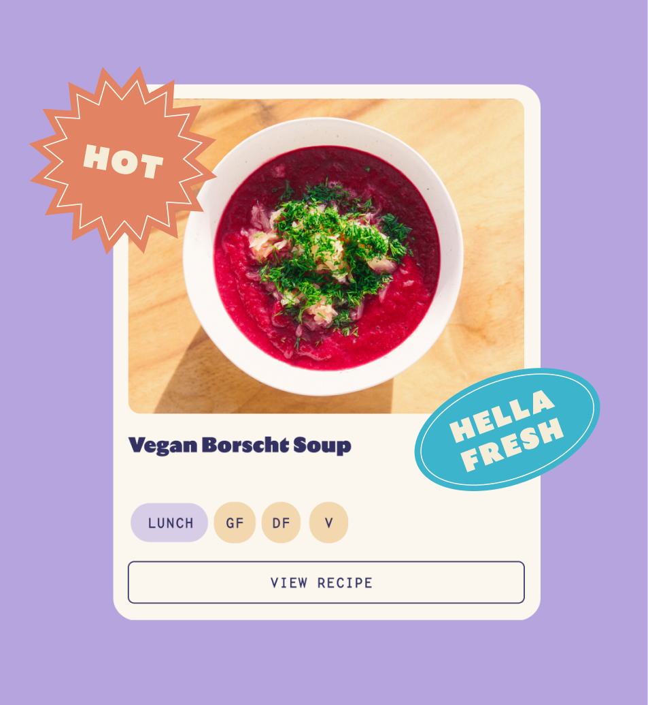
WTFork, inspired by the cheeky phrase “What the Fork?” from The Good Place, is bold, irreverent, and maybe even a little obscene. The goal—beyond cataloging food—was to create something that felt like an extension of who I am. From the branding to the website, every detail of WTFork was created by me, for me.
A blend of bold 70s-inspired typography, punchy colors, and a tactile aesthetic brings the brand identity to life—modern yet vintage, fun yet fresh.
WTFork isn’t just about food; it’s about embracing the playful, sarcastic, and slightly messy parts of life in the best way possible.
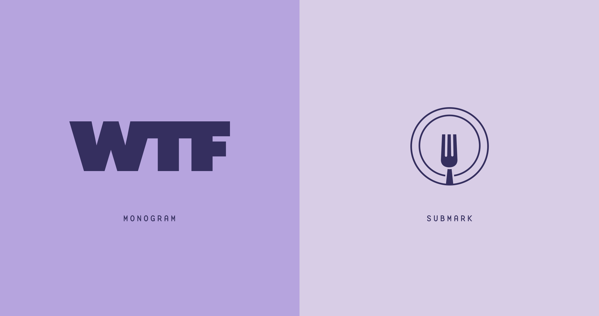
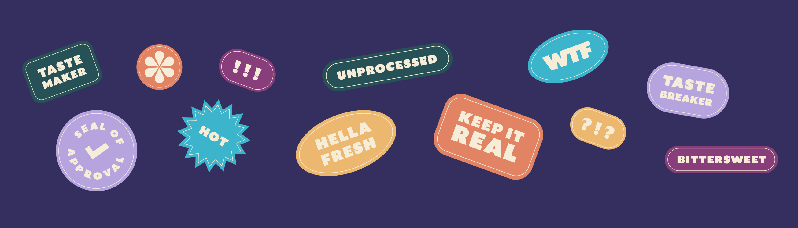
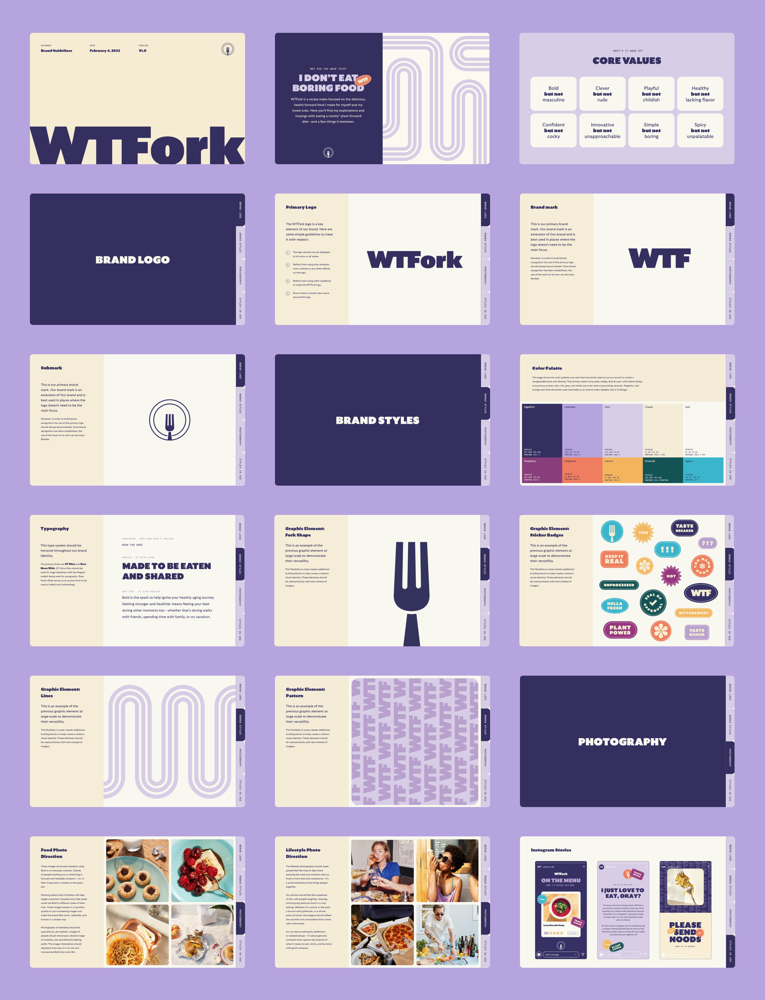
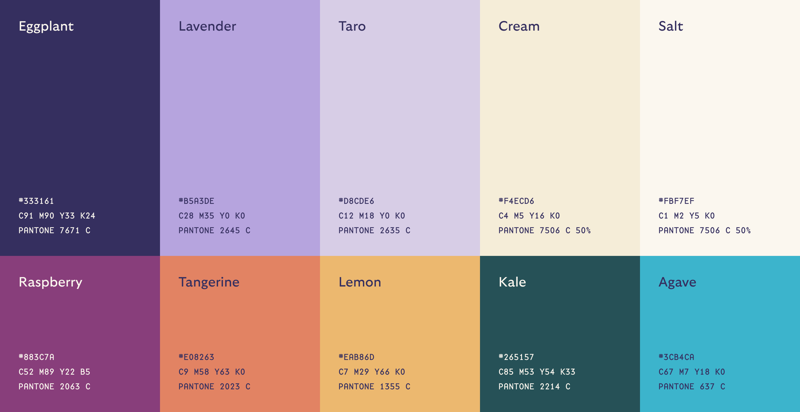
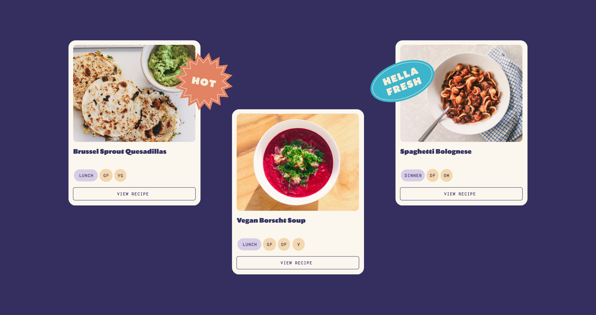
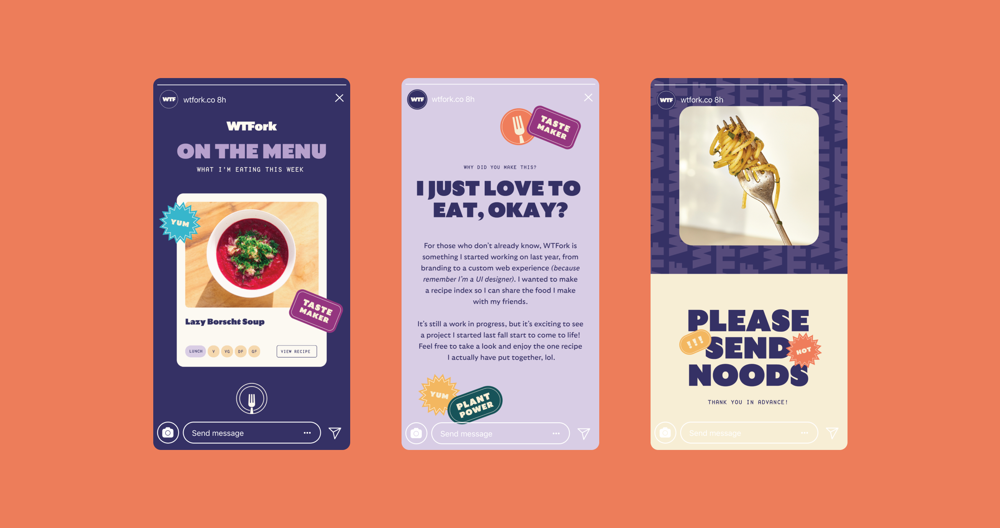
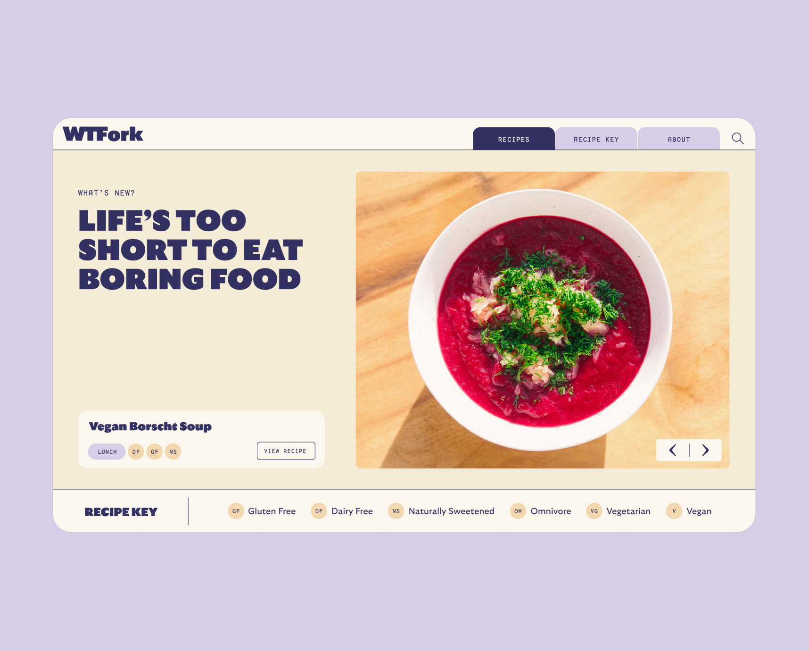
Inspired by the recipe index cards my grandma made for me, the website was designed to evoke a tactile, handmade vibe in an entirely digital space. Interactive touches like movable stickers and tab-style navigation create a playful, scrapbook-esque experience.
The result is a website that goes beyond a simple recipe index, reflecting a mix of modern and vintage influences, with a touch of sarcasm and playfulness. It’s designed to be both functional and personal, capturing my creative journey with food in a way that feels uniquely my own.
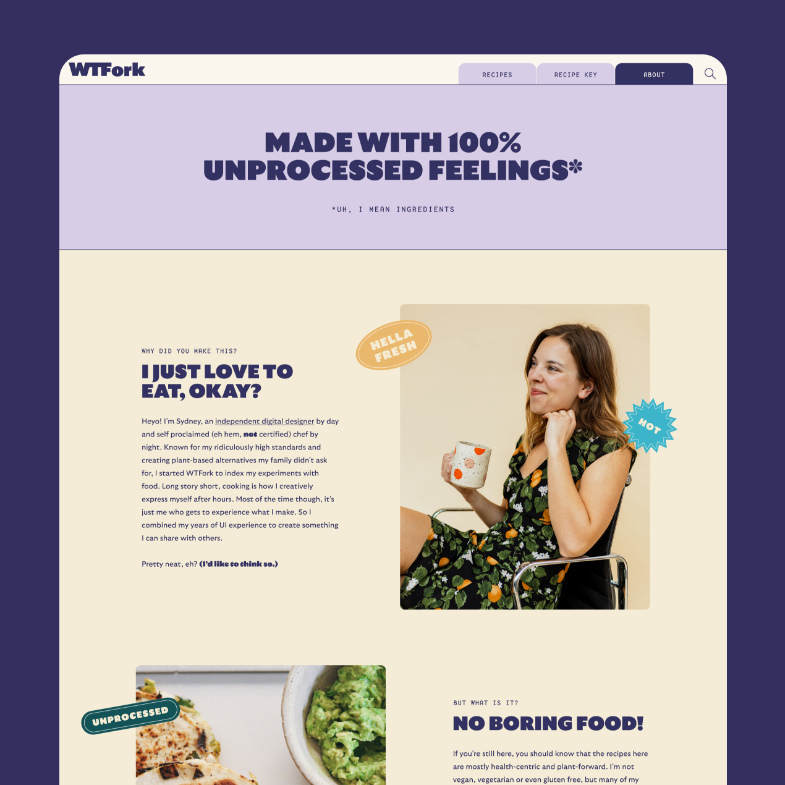
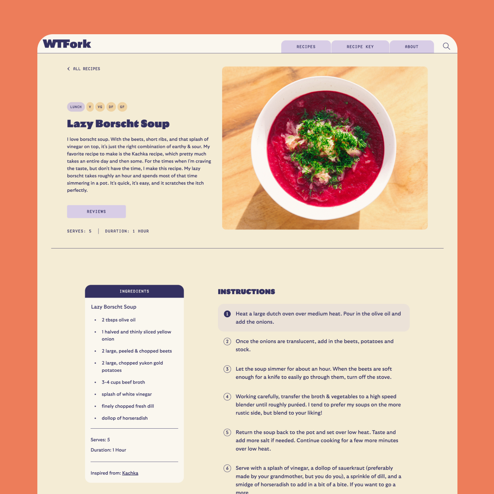
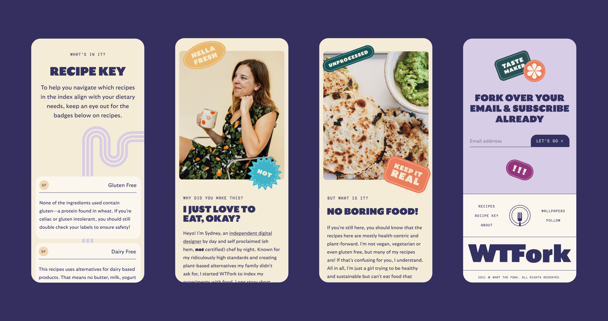
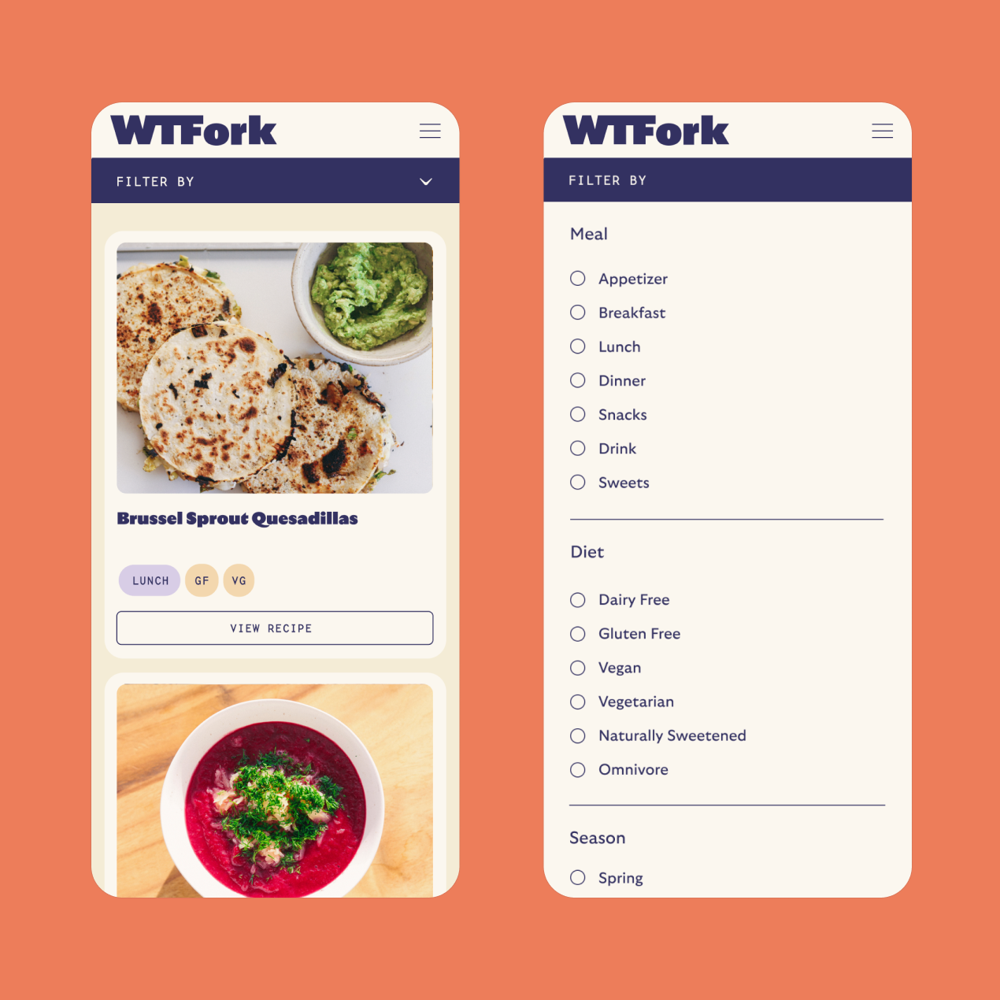
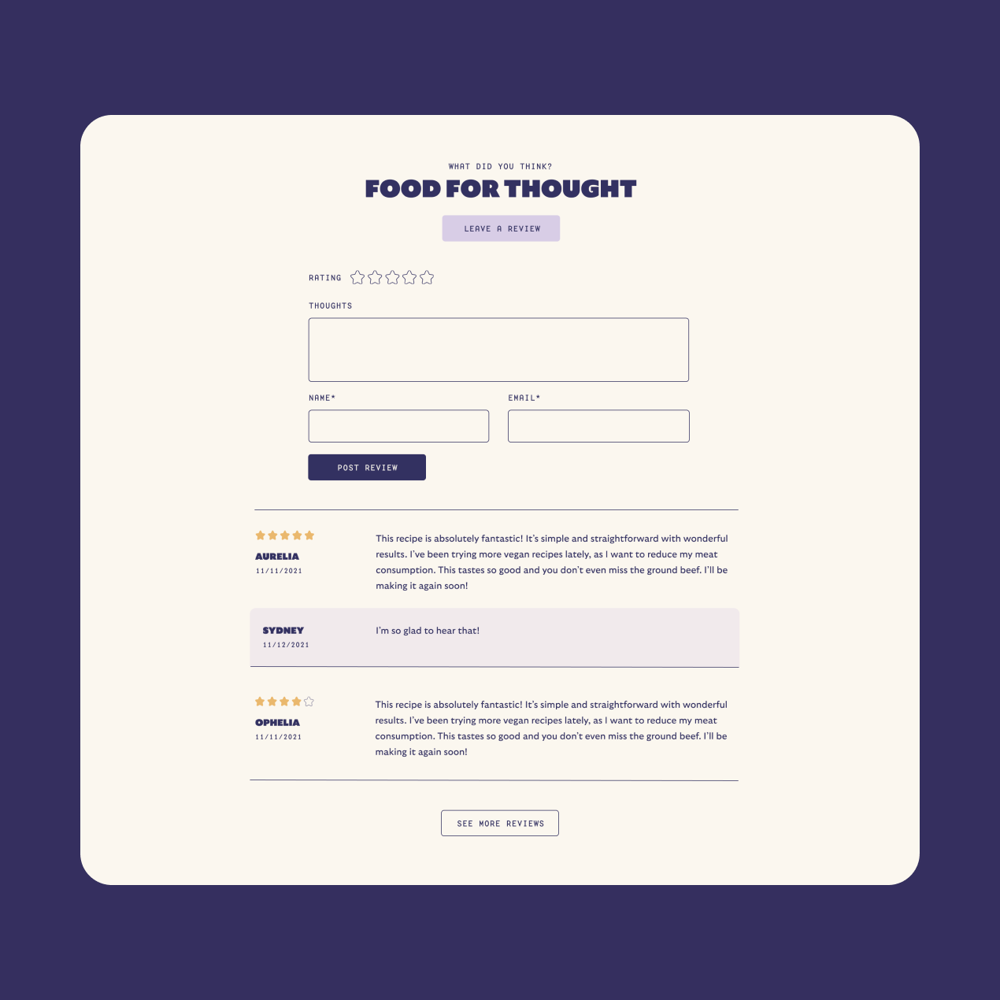
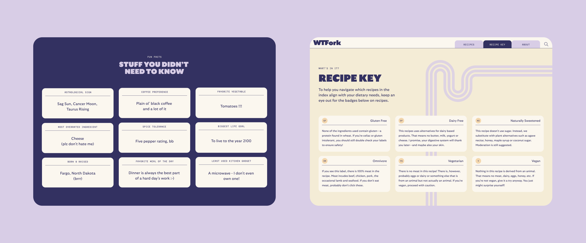
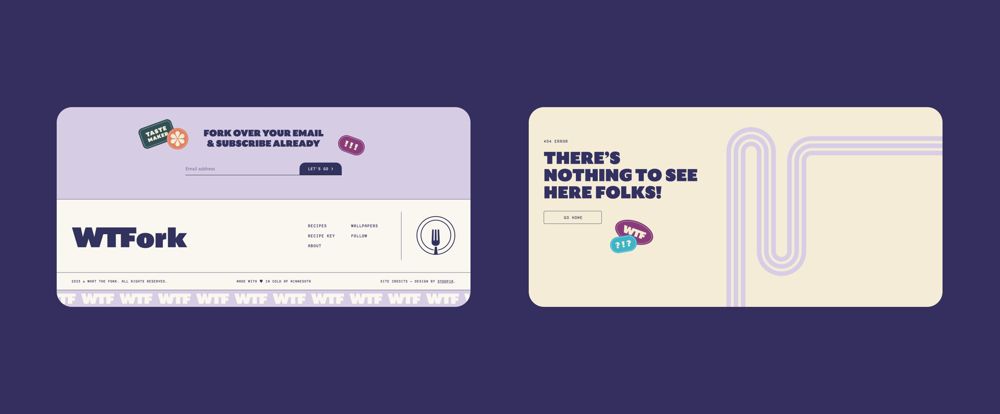
Collaborators